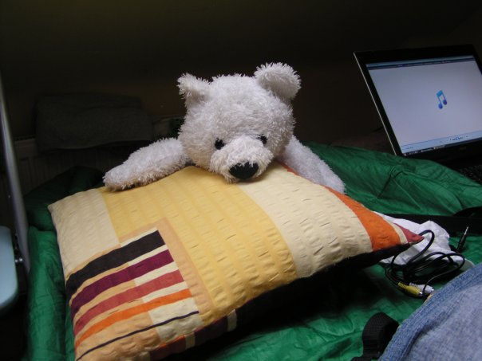

(pozn. Tento příspěvek jsem vyplodila včera v noci a nutno říct, že už v poměrně pokročilém stádiu lahve Sangrie; naštěstí však ve mně zbylo dost soudnosti na to, abych se rozhodla uveřejnit ho až poté, co si ho celý za střízliva přečtu. Až na několik drobných úprav nakonec obstál…:D Uvedené osoby nejsou smyšlené a patří jim můj dík :)) !)
Nápad na tento článek nosím v hlavě už několik dní a pořád si říkám, jestli to teda napsat nebo ne. V poslední době mi bylo tak nějak mizerně a melancholické nálady jsem se nemohla zbavit, teď se však vznáším na vlnách Sangrie a svět se to zkrátka musí dozvědět: JSEM MILOVÁNA :-) !!! A vy jste určitě také ! Pokud se o tom chcete přesvědčit, mám pro vás návrh - uklízejte !
Několik uplynulých dní jsem měla v plánu strávit nad stránkami Obchodního zákoníku…nechuť však byla silnější (doufám, že si to nečteš, Zdeni O:-)…) a já se s vervou pustila do gruntování nejprve svého a pak i bráchova pokoje. Ne že bych to dělala zas tak často, nicméně teprve dnes mě udeřila do očí zvláštní skutečnost…můj pokoj je složen z dárků !
Napadlo mě to přesně ve chvíli, kdy jsem utírala prach ze sady barevných cinzano-skleniček, které jsem dostala od strýca k 18tinám. Je to jedna z nejroztomilejších věcí, kterými jsem vůbec kdy byla obdarována. Nějaký čas jsem skleničky s motivy světových metropolí obdivovala u strýca doma a on mi je nakonec věnoval ! Miluju je všechny, ale nejradši piju z Moskvy :D…
Od utírání prachu ze skleniček jsem se přesunula ke stírání prachu z kytary, ehm. Musím říct, že jsem měla hezké dětství a ze všech vánočních dárků jsem byla vždycky nadšená (obzvlášť z loutkového divadla, které dneska odpočívá na půdě), ale tu vůbec největší vánoční euforii jsem zažila až jako dospělák (jaký paradox :D!), když mi brácha nadělil pod stromeček zaoceánské DVDčko o tom, jak Beatles dobývali Ameriku, a vedle něj ležela španělka z bazaru :D ! Že jsem se svými kytarovými pokroky došla pouze k bodu, kdy se mi ji podařilo naladit, už je druhá věc…ale já se to jednou naučím !!!
V čem je brácha opravdu nepřekonatelný, jsou narozeninová přáníčka, a já mám nejradši to, které mi poslal z Mnichova, když jsem měla osmnáct (to byl krásný čas, dostala jsem tehdá tolik skvostů :-). Krom trefného textu o tom, abych zahodila všecky iluze, které mi snad dosud zbyly :D, je na něm úžasná “slunečnice” od Salvadora Dalího, “kterou autor mylně považuje za ananas”. Ano, byly to opravdu skvělé narozeniny :DDD…
Jeden z mých nejsrdcovějších dárků se mnou už čtvrté léto sdílí jedno lože O:-)…je chlupatej a bez jeho objetí bych doma už asi neusnula :D ! Dřív jsem s ním trávívala noci u Hýsků (byla to láska na první pohled) a pak mi ho Terča donesla k maturitě jako talisman. Prospěla jsem s vyznamenáním a od těch dob tento polární medvěd, který už dávno není bílý, (ačkoliv ho občas nemilosrdně vyperu 8-)) má své čestné místo v mojí posteli :-). Během úklidu jsem zjistila, že jsem Terčin pokoj ochudila ještě o jednu unikátní věc - portrét Briana Maye, který jsem obdivovala, když jí visíval na dveřích, a který jsem od ní později dostala k Vánocům. Achjo, ještě dnes jsem celá dojatá! Tak krásnýho chlapa už asi k Vánocům nikdy nedostanu O:-)…

Méďa
Většina mých knížek v knihovně jsou dárky. Ani si nevzpomínám, kdy jsem si naposled já sama nějakou knížku koupila(krom učebnic do školy 8-)). Je fakt, že knížky miluju a jsem vždycky nadšená, když nějakou dostanu, ale co mi udělá dvojnásobnou radost, je knížka s věnováním :-) ! Mám jen pár exponátů a nedala bych je zanic na světě. Pište do knížek, prosím. Není to barbarství :-) !
Jediná sdrcovka, kterou teď u sebe nemám, ale rozhodně ji musím zmínit, je ptačí fotoalbum, které jsem dostala od svého zlatého muže k prvnímu výročí našeho seznámení. To má své čestné místo v pokoji v Brně na mém pracovním stole, kde mám pořád na očích, co všechno jsme spolu za první rok prožili (obzvlášť první snímek, vyfocený ráno po našem seznámení, má skutečně historickou hodnotu :D!!!), a mám slíbeno, že každý rok v den našeho výročí do něj přibude nová várka fotek našich společných zážitků o:-).
Tak teď už snad veříte tomu, že jsem milována. A to se mi sem toho ještě spoustu nevešlo ! Dnes mi do mé pomyslné síně slávy přibyla flaška Sangrie, kterou mi přinesla Pepa. Díky ní a této flašce jsem se tady a teď odhodlala zavzpomínat na všechny ty báječné okamžiky svého života…vlastně jsem se ke spoustě báječných věcí odhodlala právě díky Pepě (a mnoha dalším flaškám Sangrie :D…teda nejen Sangrie…:D), za což bych jí zde chtěla vyjádřit svůj dík, ikdyž vím, že na můj blog nechodí, a tak si to tu zřejmě nepřečte.
Okamžiky, kdy býváme nejčastěji obdarováváni (narozeniny, Vánoce…) nejsou tím úplně nejoptimističtějším obdobím roku, alespoň mě nutí vždycky tak trochu bilancovat a ne vždycky se člověk rád ohlíží zpět. Když se ale pustíte do úklidu (a neznám lepší čas pro úklid, než zkouškové :D…), možná taky objevíte spoustu zapomenutých pokladů, které stojí za to vzít do rukou a oprášit :-)…
Ani nevím, jestli mě nějaké dárky takhle dojímají, ale snažím se, abych třeba měla něco od každého na koleji. A hodně ráda mám ten sešitek od Tebe, cos nám všem skládala ;-) To je takový dárek, ke kterému se dá pořád vracet.
Já bilancuju při úklidu trochu jinak. Vždycky jsem ráda, když se mi povede něco vyhodit a symbolicky tak uzavřít nějakou životní kapitolu :-D